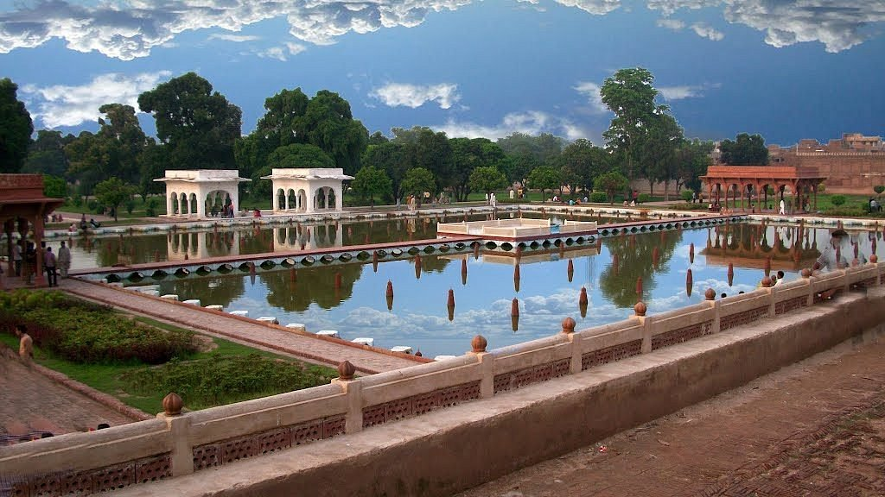

<div class="portfolio-single-load clearfix">
    <div class="custom-full-width-box">
        <div class="custom-container">
            <div class="custom-row align-items-center">
                <div class="custom-image-column">
                    
                </div>
                <div class="custom-text-column">
                    <h2 class="custom-heading">Shalimar Garden</h2>
                    <p class="custom-paragraph">
                        Built during the Mughal era in Lahore, Shalimar Garden is a masterpiece of landscape architecture and horticulture. Commissioned by Emperor Shah Jahan in the 17th century, the garden features terraced lawns, cascading fountains, and lush greenery, creating a serene oasis of beauty and tranquility. As a UNESCO World Heritage Site, Shalimar Garden showcases the Mughal aesthetic of symmetry, balance, and harmony with nature, inviting visitors to stroll through its picturesque pathways and immerse themselves in its timeless splendor.

                    </p>
                </div>
            </div>
        </div>
    </div><!-- .custom-full-width-box end -->

</div><!-- end single-project -->
